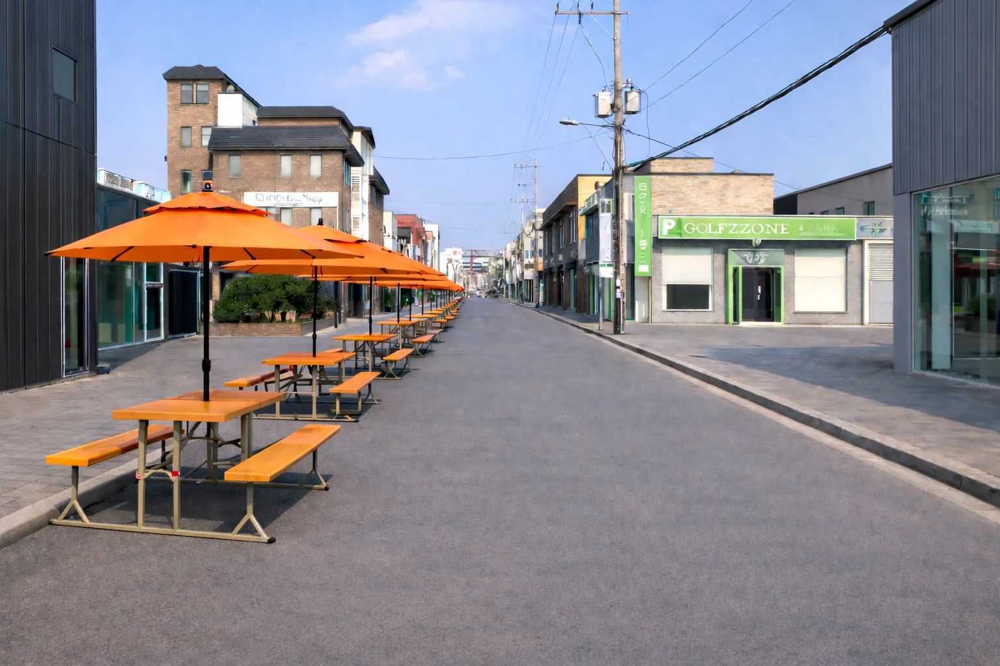
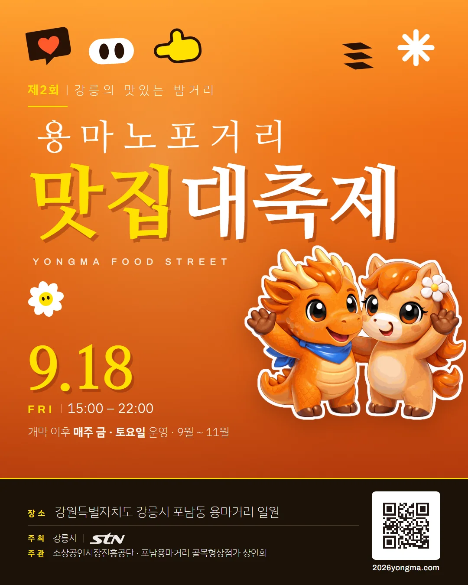
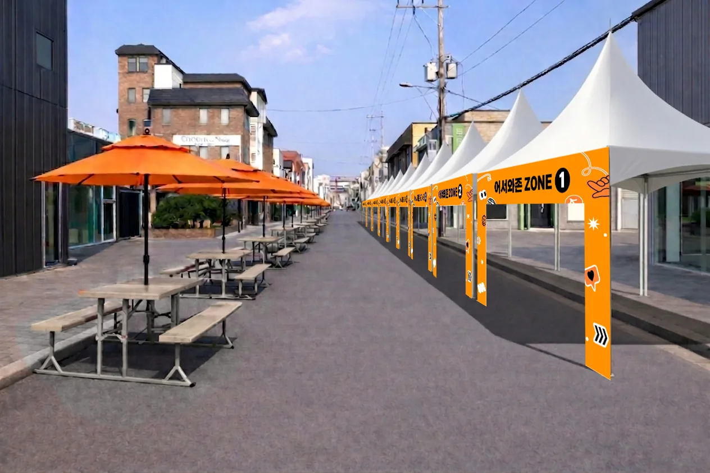
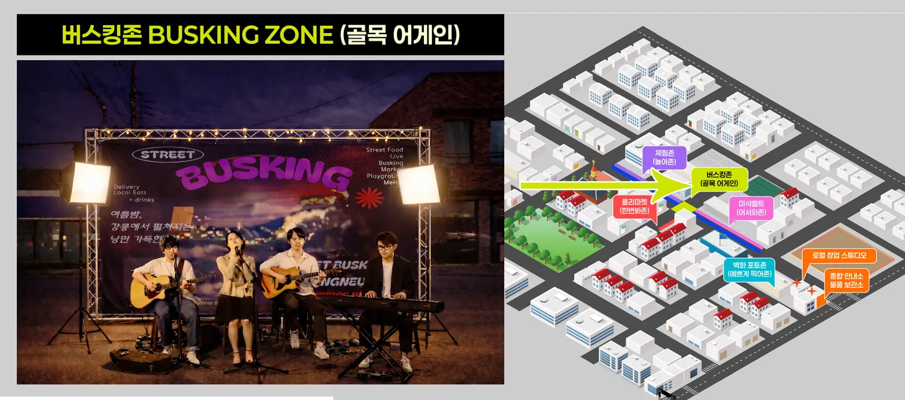

수도권 당일 관광객 최단 접근
서울 청량리에서 KTX로 1시간 24분, 강릉역에서 차량 5분. 강릉선 누적 이용객은 약 4,086만 명입니다.

40년 노포가 이어온 길, 용마미식거리
KTX 강릉역에서 600m. 40년 역사의 골목이 매주 토요일 오후, 차 없는 거리가 되어 여섯 개의 존으로 열립니다.
강릉의 맛있는 밤거리가 9월 18일 금요일 문을 열었습니다. 40년 노포와 맛집 운영부스, 플리마켓이 한 골목에서 처음으로 함께 불을 켰고, 이제 매주 토요일 같은 골목에서 이어집니다.
주최 강원지방중소벤처기업청 · 소상공인시장진흥공단 · 강원특별자치도 · 강릉시 | 주관 STN미디어 · 포남용마거리 골목형상점가 상인회

2026년 9월 18일 제2회 용마미식거리 맛집대축제 현장입니다. 날짜별 전체 사진은 갤러리에서 볼 수 있습니다.
 Why Yongma
Why Yongma
한 해 3,323만 명이 찾는 강릉이지만 관광 소비의 약 70%가 경포·안목에 몰립니다. 도심 골목상권으로 이어지는 야간 동선이 없었습니다. 용마미식거리는 그 빈자리를 채웁니다.
서울 청량리에서 KTX로 1시간 24분, 강릉역에서 차량 5분. 강릉선 누적 이용객은 약 4,086만 명입니다.
초당두부·감자옹심이·강릉짬뽕·한과·강릉커피. 관광지가 아닌 현지인의 노포가 그대로 남아 있습니다.
2024년 12월 강릉시 제1호로 지정되었고, 2026~2027 강릉방문의 해와 K-미식벨트에 연계됩니다.
입구에서 짐을 맡기고, 향토음식을 맛보고, 버스킹을 듣고, 사진을 남기고, 체험하고, 창업까지 이어집니다.


KTX 여행객이 캐리어를 맡기고 곧장 골목으로. 다국어 안내와 로컬상품 전시랙을 함께 운영합니다.

강릉 향토음식을 한 줄에 모았습니다. 농식품부 K-미식벨트와 연계한 노포·맛집 거리입니다.

매주 토요일 총 15회. 인디밴드·어쿠스틱·국악 크로스오버 버스킹에 이어 DJ 음악다방이 밤을 채웁니다.

용마거리 40년 히스토리를 담은 벽화 3개소. 상인 인터뷰와 옛 사진을 QR로 연결합니다.

감자옹심이·한과 만들기, 강릉커피 로스팅, 로컬 작가 전시, 외국인 체험과 영문 인증서까지.

로컬 수공예 프리마켓을 행사기간 내내 운영. 빈 점포는 예비창업자와 매칭해 청년 창업으로 잇습니다.
9월부터 12월까지 매주 토요일 오후 3시부터 밤 10시까지. 공연과 마켓, 체험이 겹겹이 쌓여 머무는 시간이 길어집니다.
버스킹과 DJ 음악다방·거리노래방을 하루에 함께 여는 통합 공연 15회. 우천 시 다음 날(일) 또는 다음 주로 옮깁니다.
동행축제와 연계한 K-POP·K-DANCE 무대. 공원 무대에서 전국 단위로 중계됩니다.
강릉 로컬 수공예·커피·디저트 셀러를 상시 모집합니다. 참가 신청은 홈페이지에서 받습니다.
차 없는 거리 가장자리 300m에 파라솔·난방설비·몽골텐트를 두어 쌀쌀한 계절에도 머물 수 있습니다.


상권기획자가 미디어 법인입니다. 방송·영상 인프라를 상권 홍보에 직접 투입합니다.


강릉역에서 차량 5분. 시외버스터미널과 강릉시청도 인접해 있습니다.
| 주소 | 강원특별자치도 강릉시 포남동 용마거리 일원 |
|---|---|
| 개막 | 2026. 9. 18.(금) 15:00 — 제2회 용마미식거리 맛집대축제 |
| 운영 | 매주 토요일 15:00 ~ 22:00 (2026년 9~12월) |
| 면적 | 29,171.14㎡ (상업지역 14,810.41㎡) |
| 점포 | 전체 168곳 · 상인회 회원 124곳 |
| KTX | 강릉역 600m · 차량 약 5분 / 서울 청량리 1시간 24분 |